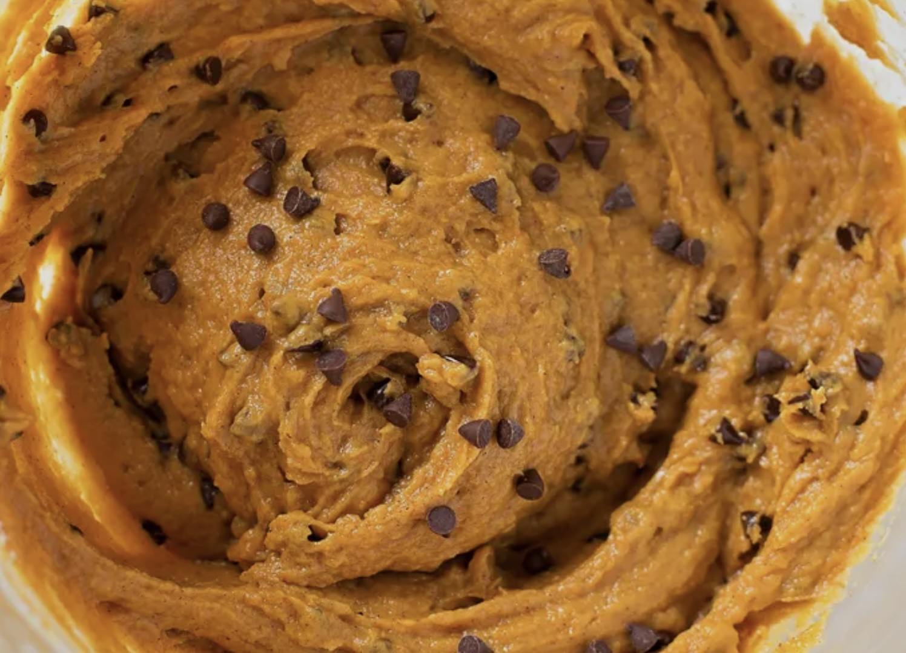
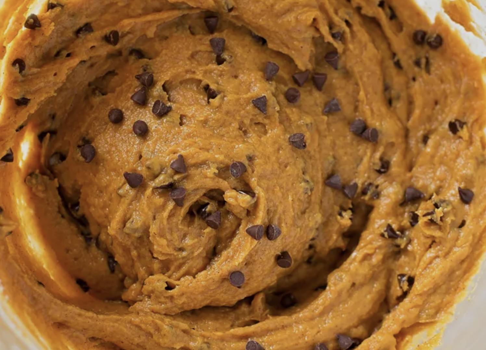
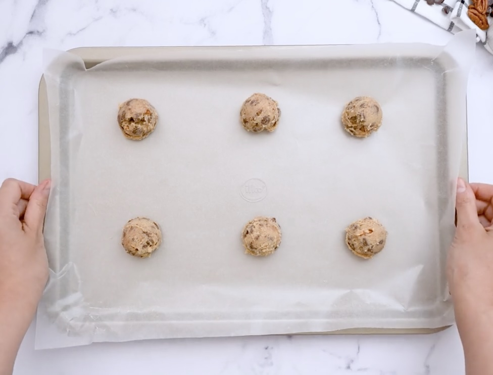
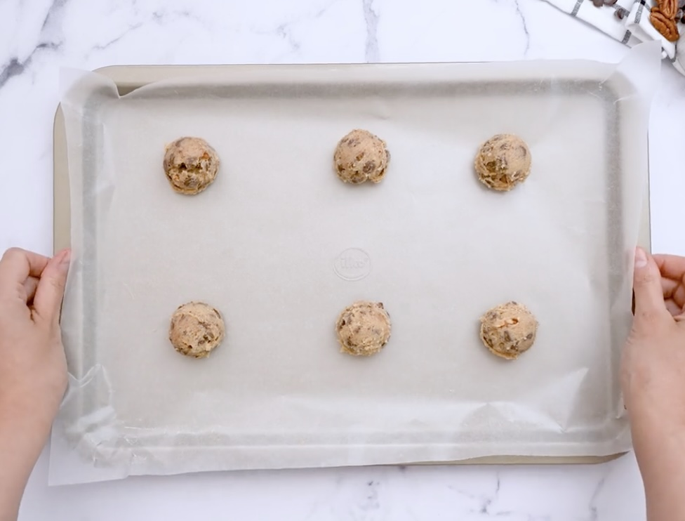
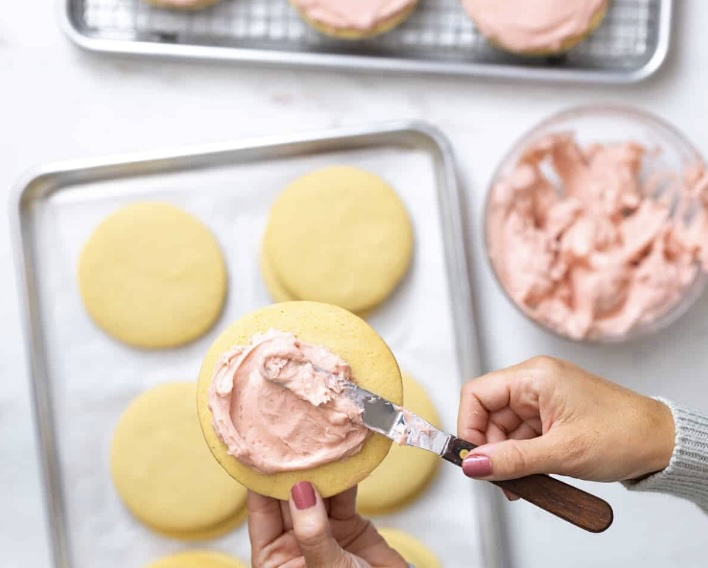
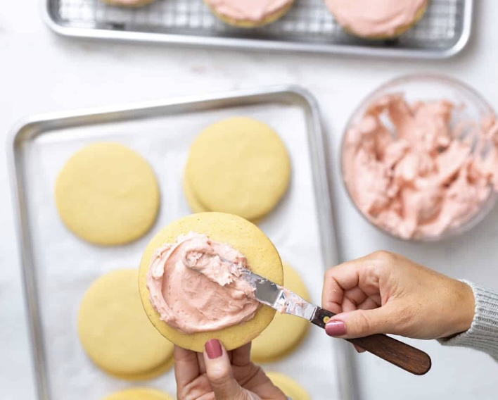

Odin Top 3 Cookie Recipes
1. Pumpkin Cholocate Chip Cookies
 

Click here for website reference!
Want to bake like the best around fall?
Nothing screams fall like these delicious cookies! This holiday favorite recipe is a hit when it's time for the leaves start to changing colors and sweater weather begins. With only easy to
find ingredients and minimal cook time, this recipe will leave you craving more! These soft and fluffy cookies take only 30 minutes to make (10 minutes of prep,
15 minutes cook, and 5 minutes to cool), with common kitchen items like a standard mixer, nonstick sheet pan, and cookie spatula. Grab your friends and family and prepare yourself to indulge.
Ingredients:
- 1 (15 oz) can pumpkin puree - (1 ¾ cup)
- 1 1/2 cup granulated sugar
- 1/2 cup +2 tbsp canola oil - OR vegetable oil
- 2 teaspoon vanilla extract
- 2 1/2 cup cake flour
- 2 1/2 tsp pumpkin pie spice
- 1 1/2 tsp baking powder
- 1 1/2 tsp baking soda
- 1 tsp kosher sea salt
- 1/2 tsp cinnamon
- 1 1/4 cup mini semi-sweet chocolate chips
Baking Steps:
- Preheat oven to 375°F (190°C). Line a baking sheet with parchment paper or a silicone baking mat, and set aside.
- In a large bowl of a stand mixer (or a large mixing bowl using a hand mixer), add the pumpkin puree, sugar, oil, and vanilla. Mix until combined, about 30 seconds.
- In a medium mixing bowl, whisk together the flour mixture, pumpkin pie spice, baking powder, baking soda, salt, and cinnamon. With mixing speed on low, gradually add the dry ingredients. Mix until combined.
- Using a large spatula or wooden spoon, fold in the mini chocolate chips.
- Using a standard-size cookie scoop, scoop the cookie dough onto the prepared baking sheet. Place in the oven and bake for 14-16 minutes or until they are firm and start to turn brown on the edges.
- Remove and allow to cool for 5 minutes on the sheet before transferring them to a wire rack to cool completely. Do not store until cookies have cooled for at least 30 minutes at room temperature.
2. Chocolate Chip Cookies
 

Click here for website reference!
Ooey-Gooey Goodness
Are you a chocoholic like me? If so, you won't regret doubling the batch! These extra chocolate lovers these easy minimum bake time cookies are a must,
with easy-to-find pantry ingredients leaving your kitchen smelling like a bakery. Made with extra chocolate chips giving them that gooey (instagram worthy) cookie break that
we all drool over. These are good for any occasion and year round delights!
Ingredients:
- 1¼ cups flour
- 3 tablespoons cornstarch
- ½ teaspoon salt
- teaspoon baking soda
- cup cold butter (1 stick of butter is usually 1/2 cup)
- 6 tablespoons granulated sugar
- 6 tablespoons brown sugar
- 1 egg
- teaspoon vanilla extract
- 1 bag semi-sweet chocolate chips. About 10-11 oz (or 1/2 a bag if you want less chocolate)
- ¼ cup walnut pieces (optional)
Baking Steps:
- Preheat oven to 475°.
- Prepare baking sheets with parchment paper to prevent sticking.
- In the smaller mixing bowl, whisk together the flour, corn starch, salt, and baking soda.
- Cut the stick of butter into smaller pieces.
- In the larger mixing bowl, combine the butter, sugar, brown sugar, egg, and vanilla extract.
- Gently stir the dry ingredients (flour, corn starch, salt, etc.) into the larger bowl with the butter/egg/sugar mixture.
- Add in chocolate chips and optional walnuts. Mix gently until fully combined.
- Using a full size spoon (tablespoon), make cookie dough balls and place them on the baking sheet.
- Bake for 6-7 minutes or until the tops of the cookies get golden/brown (keep your eye on them).
- Remove from the oven and let them cool. They’ll continue to cook on the inside while they cool.
- For the softest cookies, eat them when they are warm, not totally cooled.
3. Big Pink Cookie
 

Click here for website reference!
Pink and Perfect Year Round
Any one else obsessed with the "Big Pink" cookies you buy from the local cookie shop? These cookies are meant to mimic just that and now you can make them at home!
Due to the frosting, be prepared for extra steps (But you wont regret it.. trust me). Grab a helping hand, appetite, and get ready to bake and decorate!
The cream cheese frosting will satisfy a sweet tooth any time of the year.
Cookie Ingredients:
- 5 cups all purpose flour
- 2 teaspoons baking powder
- 1 ½ teaspoons fine sea salt
- 1 teaspoon ground cardamom
- 1 ½ cups (3 sticks) unsalted butter at room temperature
- 1 ½ cups granulated sugar
- 4 large eggs at room temperature
- 1 ½ teaspoons pure vanilla extract
- 1 ½ teaspoons almond extract
Cream Cheese Frosting:
- 8 ounces cream cheese (softened)
- ½ cup (1 stick) unsalted butter at room temperature
- 1 teaspoon almond extract
- 3 ½-4 cups powdered sugar
- ¼ cup freeze dried strawberries (crushed & sifted) or a couple of drops of pink or red food coloring
- ¼ cup decorative sprinkles (optional)
Sugar Cookie Steps:
- Whisk together the flour, baking powder, salt, and cardamom in a medium bowl. Set aside.
- In the bowl of an electric mixer fitted with the paddle attachment, cream the butter and sugar
together on high speed for about 5 minutes, stopping the mixer occasionally to scrape down the sides of the bowl. The mixture should be airy and fluffy and slightly lighter in color.
- Crack the eggs into a liquid measuring cup. With the mixer on low, slowly add eggs to the bowl one egg at a time, allow each egg to blend in completely before adding the next.
Blend in the vanilla extract, followed by the almond extract. *hint, the mixture may slightly curdle when you add the almond extract. Don't worry, it will recede once the
dry ingredients are mixed in. Scrape down the sides of the bowl.
- Slowly add the dry ingredients and mix on low speed until a smooth consistency is achieved. The dough will be soft and sticky at this point.
- Divide the dough into three equal disks and wrap individually in plastic wrap. Chill the dough in refrigerator for at least an hour up to overnight. This allows the dough to
develop and firm up so it's easier to to roll out.
Cream Cheese Frosting Steps:
While the dough chills, prepare the frosting. If using freeze dried strawberries:
- Crush the freeze dried strawberries with a mortar and pestle, in a food processor or by placing
them in a sealed plastic baggie and gently rolling and pounding them with a rolling pin. Keep
crushing them until a fine powder is formed.
- Next, sift the strawberry powder through a fine mesh sieve to remove any large seeds.
- Sift the freeze dried strawberry powder together with the powder sugar.
- In the bowl of an electric mixer fitted with the paddle attachment, cream the butter,
cream cheese and almond extract until completely smooth.
- Slowly add in sifted powdered sugar mix to taste - use 3 ½ cups for a more tangy cream cheese
frosting and 4 cups for a sweeter cream cheese frosting. Alternatively, if you are using food coloring, slowly add, one small drop at a time, until
you are happy with the color. Blend until color is evenly distributed throughout the frosting. Place the frosting in refrigerator until ready to use.
Bake and Decorate:
- Preheat the oven to 350°. Remove dough from refrigerator and allow it to soften for a few minutes.
- Be sure to have cookie cutters and a rolling pin available. For large cookies, I use a 4" round and 3.5" x 4"
heart shape for the large cookies. For the medium cookies, 3" round and 2.5" x 3" heart shape.
- On a lightly floured surface, use a rolling pin to roll out one of the dough disks into ¼" thickness.
- Cut the rolled dough with cookie cutters, place cookies closely on a lined baking sheets. Gather the scraps and
re-roll and cut dough. Repeat with remaining dough disks. Place the baking sheet of cut cookies in the refrigerator or freezer to firm up for at least
15-30 minutes while the oven preheats. At this stage you can freeze the cut cookies solid on the baking sheets. Then transfer to a tight sealing baggie and store in the freezer up to two months.
- Place 6 large chilled cookies per baking sheet, at least 1" apart. Bake for 12-16 minutes (depending on size) until the edges start to brown slightly.
Remove from oven and cool on cookie racks.
- Once the cookies have completely cooled, frost them liberally using a small offset spatula. Add sprinkles if desired.
Want the exact source?